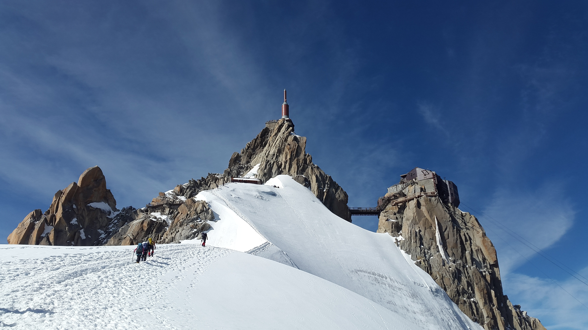
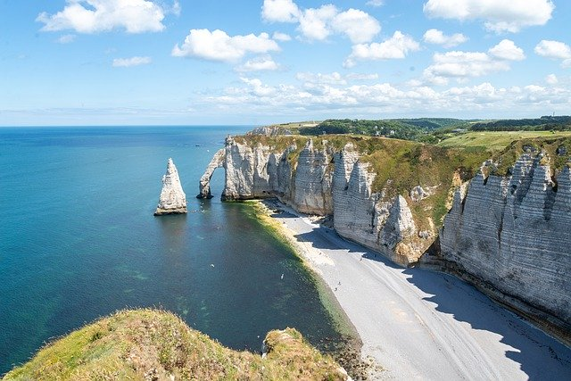
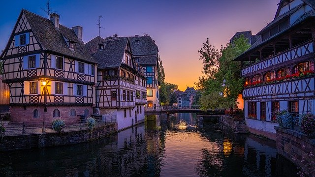
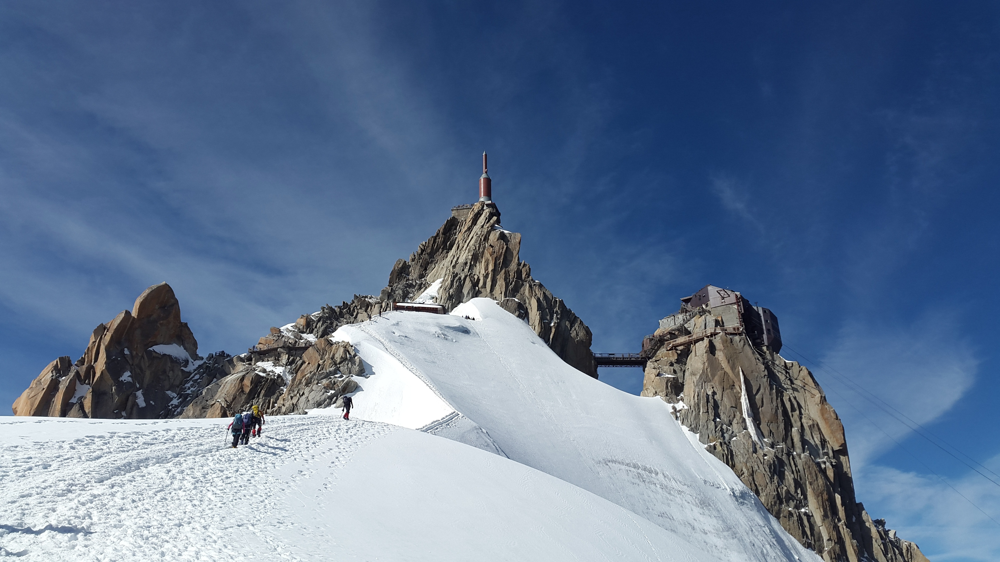
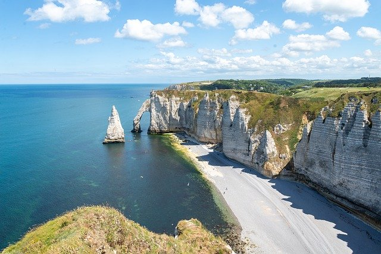
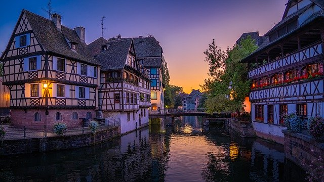

transport
Avion, train, bus, covoiturage… le transport reste une partie importante du budget vacances.
Partir en vacances en France ? La première destination touristique au monde. … Vous avez des hésitations ? Alors, laissez-vous séduire par notre charmant pays qui a autant d’atouts pour vous dépayser que des vacances à l’autre bout du monde ! Pour un week-end en amoureux (Weekendesk) ou une location d’une semaine en famille (Odalys), toutes les régions regorgent de sites naturels exceptionnels et de véritables trésors. Vous pouvez aussi rejoindre la plupart des destinations par bus ou train (ouisncf) pour arriver détendu sur votre lieu de vacances !

 





Avion, train, bus, covoiturage… le transport reste une partie importante du budget vacances. Anticiper reste souvent la meilleure méthode pour trouver des billets pas chers. On constate que le prix d’un vol peut varier du simple au triple au cours d’un même mois, vers une même destination ! Si vous avez la possibilité d’être flexible sur vos dates, c’est aussi un excellent moyen de faire des économies.
Les offres Ouigo desservent de nombreuses villes en France et sont tout à fait abordables. Même pendant l’été, vous pouvez trouver des trajets pour 20 euros. À ce prix-là, mieux vaut être flexibles sur les horaires, cela mérite bien un petit effort ! Autre solution que celle de prendre son billet dès l'ouverture des réservations car les places se vendent très rapidement On peut aussi voyager en train de nuit, à la fois très pratique et très économique. Les TGV Prem's dernière minute que l'on peut réserver au dernier moment ! Les billets sont en vente entre 10 jours et 3 jours avant la date de voyage. Les offres TGV Prem's dernière minute sont disponibles uniquement en ligne sur le site de la SNCF.
La France de par sa taille favorise les moyens de transport au sol comme le train, le covoiturage ou le bus, mais aussi dans les airs avec de nombreuses compagnies low-cost. L’avion est à privilégier sur les plus longues distances
Pour les vols intérieurs, les mois de septembre et `janvier restent à privilégier pour faire vos réservations. Où que vous alliez, évitez d'acheter un billet au mois de juillet : les prix sont toujours plus élevés ! N'oubliez pas que les prix et les tendances peuvent varier selon la destination.Covoiturage : la bonne alternative
Comment ne pas confronter le covoiturage aux transports ? Blablacar en tête, les sites de covoiturage permettent de voyager extrêmement facilement et à moindre coût sur tout le territoire français. Avec une offre de conducteurs très complète, il est possible de trouver un trajet la veille pour le lendemain ou même le matin pour l’après-midi sans avoir à payer une fortune.
Evidemment, les trajets de 3-4 heures maximum sont à privilégier, au delà, le confort est mis de côté.
Bon voyage !